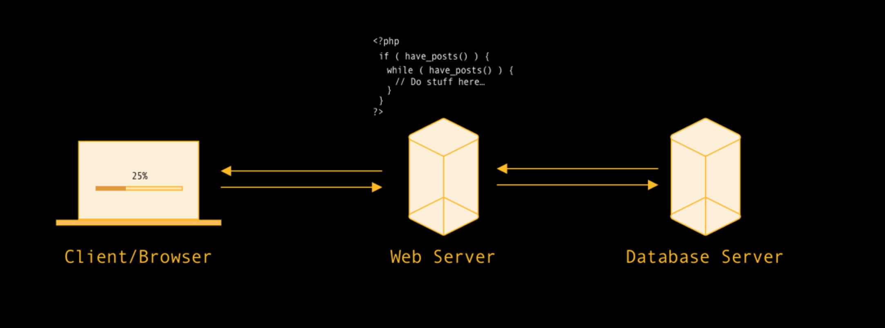

The Almighty JAMstack
Jamie Bradley
@jamiebradley234
https://endeavour.digital
Hello!
- UI Engineer
- Failed Musician
- Founder of Endeavour Digital
- Huge fan of JAMstack!
What we'll be covering
- What is JAMstack?
- Advantages/Disadvantages
- Examples of JAMstack
- How to Get Started with JAMstack
What is JAMstack?
What is JAMstack
A modern architecture —
Create fast and secure sites and
dynamic apps with JavaScript,
APIs, and prerendered Markup,
served without web servers.
JAMstack
"...Served Without Web Servers"
Served Without Webservers
- Web Apps/Websites are Hosted on a Global CDN
- Not managing a dedicated Web Server(s)
-
Content is immediately distributed to the user
- No server side rendering to generate dynamic content at runtime
-
What about server side API requests?
- Serverless functions (Functions As A Service)
- So long dedicated API Proxy!
What isn't a JAMstack website
Example: Typical CMS Driven Website
The Good
- Content Managed Website
- Instant Feedback
- Huge array of Plugins
The Not So Good
- Content retrieved at runtime
- Bigger surface area of attack
- The more data we have the slower the page load
- Those shiny plugins can feck up the site
- Cost more money to scale
- Provision more servers
- Introduce load balancers
- Move assets to a CDN
- It could be simplified
What's the alternative?
We're gonna turn to the browser and abstract the UI Layer
Nothing new here. Think of the iPhone
- Imagine a mobile app where UI is reloaded from a server each time an action was taken
- Why not treat Web Apps in the same way?
JAMstack
JavaScript
- Dynamic programming during the request/response cycle is handled by JavaScript
- Frameworks: React, Angular, Vue etc
- Vanilla JavaScript
- Routing
- UI Logic
- Dynamic behaviour
API's
- Server-side processes or database actions are abstracted into reusable APIs, accessed over HTTPS with JavaScript.
- Leveraging third-party services: Fetching Content (Contentful/Sanity), Handling Payments (Stripe)
- Custom-build services: User Authentication, Product Inventory
Markup
- Templated markup should be prebuilt at deploy time, usually using a site generator for content sites, or a build tool for web apps.
-
Headless CMS
- Sanity 🎉
- Contentful
- Prismic
- Forestry
- Ghost
Isn't this just a static website?
- Well yeah...kinda
- The only static part is the output of our pre-compiled pages/templates (at build time) that are distributed to the user.
- We can still deliver dynamic content.
How do we do it?

I've started working a personal website/blog I've built it with @sanity_io, @gatsbyjs and I've hosted it on @Netlify. I don't think I'll ever get bored of realtime updates when editing content 👌🏻 #JAMstack #goingheadless #Serverless pic.twitter.com/xXwF1JJZN4
— Jamie Bradley (@jamiebradley234) July 2, 2019

Abstracting the Front End Layer gives us some added benefits
Better Performance
More Secure
How are we going to host it?
How are we going to host it?
- Content Delivery Network (CDN) - no web servers
-
Manually publishAutomatically publish code/content changes - Automatic HTTPS upon initial deployment
- Incorporated within our GIT workflow
Is there a service that can do all that?
😎
Abso-feckin-lutely
Netlify simplifies dev ops for folks like me who just want to focus on Front End code.
Real Life Examples
Smashing Magazine
SmashingMagazine.com is now much faster, they went from 800 ms time to first load to 80 ms. Smashing’s users will have a smoother experience due to the easier integrations, speed, and better performance.https://www.netlify.com/blog/2017/03/16/smashing-magazine-just-got-10x-faster/
Cornerstone OnDemand
...Cornerstone OnDemand, a talent management company, migrated from an outdated, monolithic CMS architecture to the JAMstack, powered by Netlify, Gatsby, and Sanity.io. As a result, page loads are 25% faster and time to market with new web pages and content has improved 30%. As a bonus, the team has also greatly improved its ability to retain and attract new talent.https://www.netlify.com/blog/2019/07/02/cornerstone-ondemand-delivers-web-projects-30-faster-with-netlify/
StriVectin - Gatsby & Shopify (Prev. Magento)
...We have seen an immediate and sustained increase of 20% in organic traffic to the site.https://www.gatsbyjs.org/blog/2019-08-14-strivectin-case-study/
Getitng Started with JAMstack
Getting Started with JAMstack
- Use a generator like Stackbit (https://stackbit.com)
- Pick a theme
- Pick a Static Site Generator
- Pick a Headless CMS
- It deploys the package to Netlify
- Create your own themes! (Great for Agencies)
- Check out Jason Lengstorf's YouTube Series "Learn with Jason"
- Visit https://jamstack.org
- Checkout the JAMstack O'reily Book